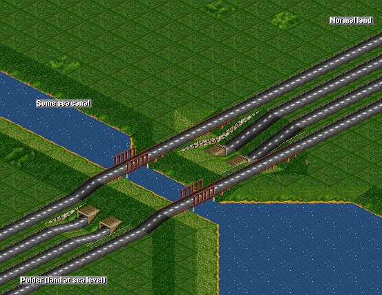

High sea level – Tunnel under sea patch
Last week another nice patch showed up at Forums. The “High sea level-Patch” makes it possible to change the Level on which the sea starts. It makes it possible to create tunnels under the sea, to create lakes and rivers in higher areas of the map. The map’s become more colorful now and some things map-designers always dreamt of become true.
Check this image for a first impression and imagine what could be possible.

Actually water floods everything in normal OTTD and in the patch there is a solution which stops at tiles of the same level, otherwise the whole map would be flooded if you make one mistake at a higher terrain level. In my opinion there are some complete new ideas for the handling of water in OpenTTD needed. What are yours?
And don’t forget to check the authors page
Categories: OpenTTD, Patches